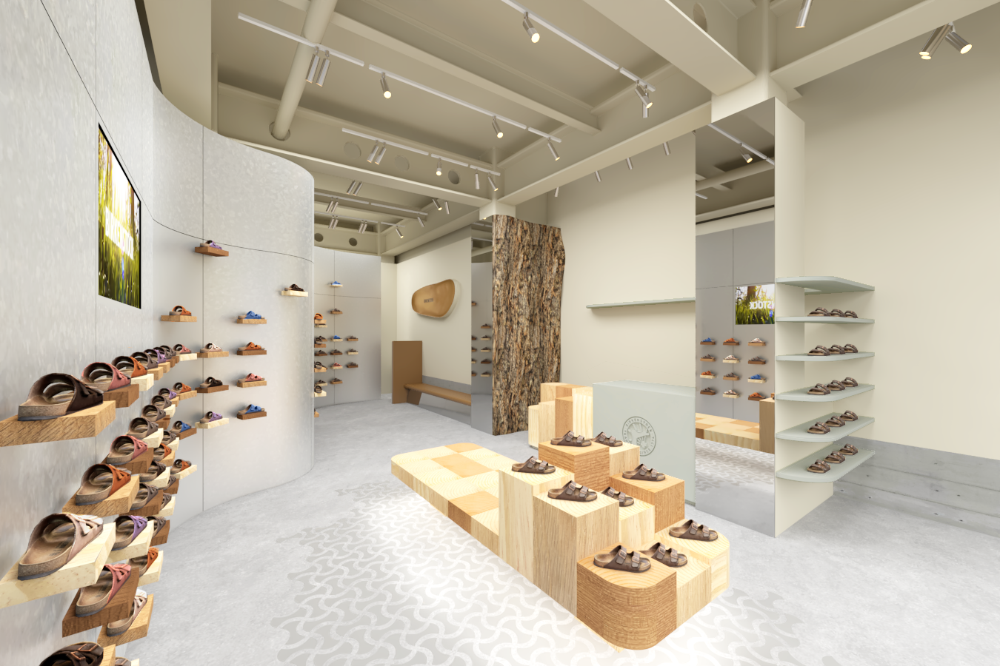
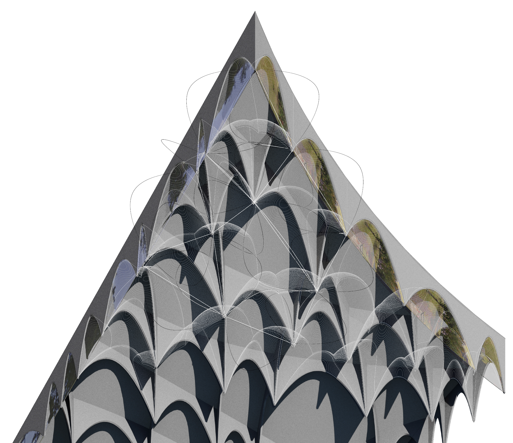
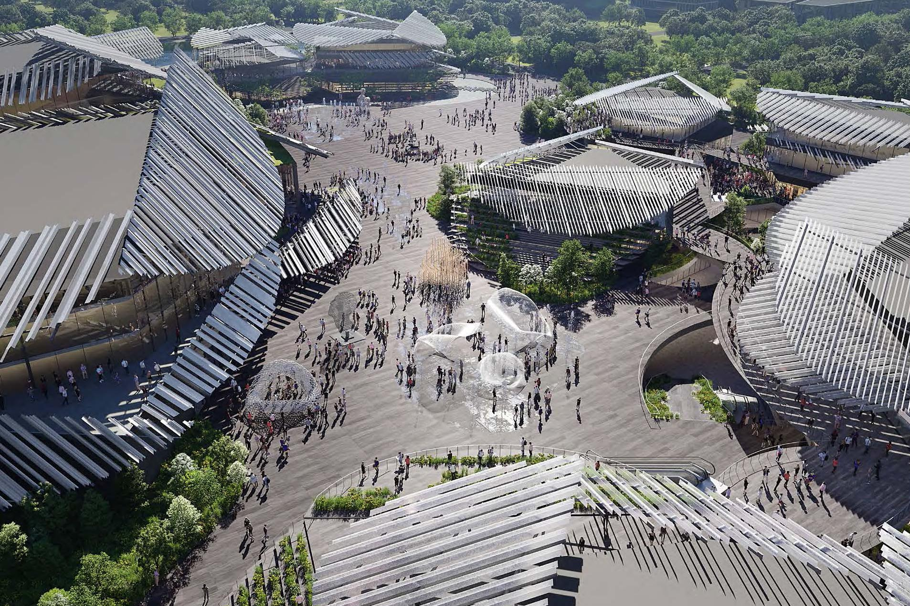
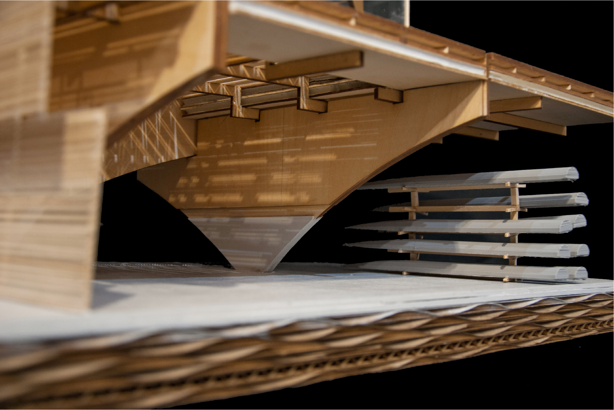

Selected Work
UCCA Clay Museum
A public museum shaped through the spatial memory of the local dragon kiln, pairing ceramic material research with a quieter civic presence.
Open project
Selected Work
A public museum shaped through the spatial memory of the local dragon kiln, pairing ceramic material research with a quieter civic presence.
Open project

Harajuku, Tokyo, Japan

Oomori, Tokyo, Japan
Selected Work
Terraced massing frames layered views through a historic longtang, with a below-grade arrival sequence linking hotel, retail, and museum spaces.
Open project


Shinjuku, Tokyo, Japan

Hachioji, Japan

Meguro, Tokyo, Japan

Wuxi, Jiangsu, China

Inwood, New York, USA